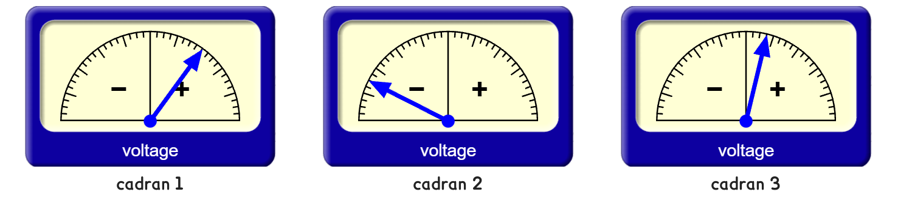
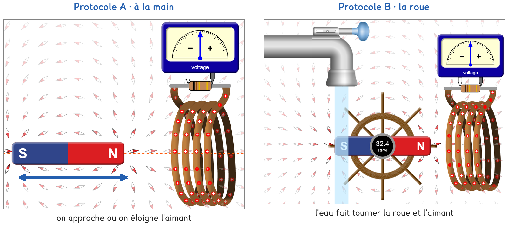
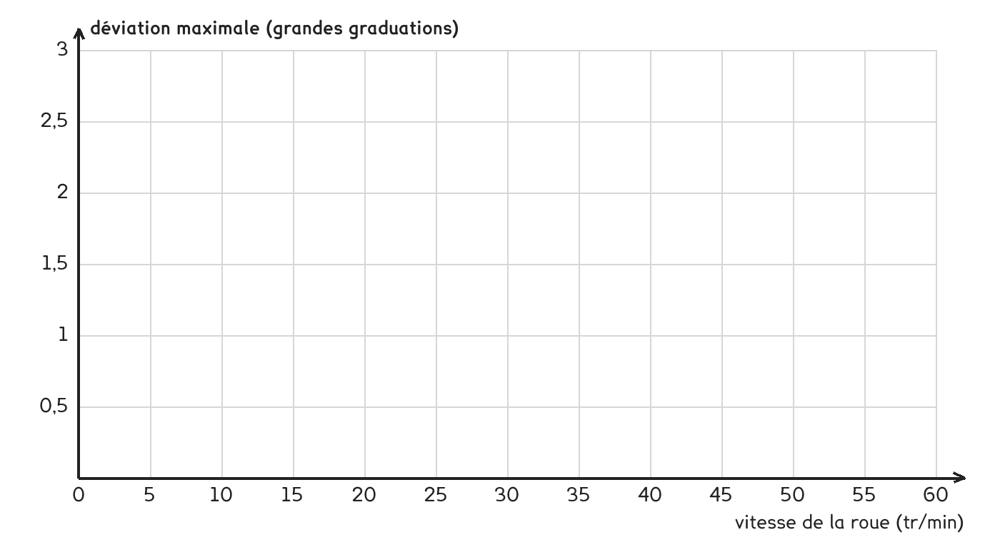

Tle Bac Pro · MELEC · CIEL · TP sur simulation SIM-11
À quelle condition un aimant et une bobine produisent-ils une tension, et comment la rendre plus grande ?
3 figures
Sujet. Une lampe de vélo s’allume sans pile : la dynamo frotte sur la roue. Une lampe torche « à secouer » se recharge quand on l’agite. Dans les deux, un aimant bouge près d’une bobine.
Problématique : à quelle condition un aimant et une bobine produisent-ils une tension, et comment la rendre plus grande ?
La simulation. « Labo électromagnétique de Faraday », écrans « Bobine de détection » et « Générateur », sur phet.colorado.edu : ouvrir l’écran Bobine de détection · ouvrir l’écran Générateur. Sans réseau : la copie hors ligne, fichier phet/faradays-electromagnetic-lab_fr.html.
Dans la simulation, la bobine est reliée à un voltmètre à aiguille. Son cadran n’a pas de chiffres : on compte les grandes graduations, cinq de chaque côté du zéro, chacune partagée en quatre.

Captures de la simulation « Labo électromagnétique de Faraday », PhET Interactive Simulations, University of Colorado Boulder, CC BY-NC 4.0.
a) Pour chaque cadran, relever le côté de l’aiguille et sa déviation.
| cadran 1 | cadran 2 | cadran 3 | |
|---|---|---|---|
| Côté de l’aiguille, + ou − | + | ……… | ……… |
| Déviation, en grandes graduations | 2 | ……… | ……… |
La roue du générateur affiche sa vitesse en « RPM » : ce sont des tours par minute, notés tr/min en français.
b) Convertir en tours par seconde. Le premier est fait.
| En tr/min | 60 | 30 | 45 | 3 000 |
|---|---|---|---|---|
| En tr/s | 1 | ……… | ……… | ……… |
Deux protocoles répondent à la même question. Une partie de la classe prend A, l’autre prend B, et on compare à la fin.

Captures de la simulation « Labo électromagnétique de Faraday », PhET Interactive Simulations, University of Colorado Boulder, CC BY-NC 4.0.
Protocole A · à la main. Écran « Bobine de détection ». On déplace l’aimant devant la bobine, puis la bobine devant l’aimant, et on regarde l’aiguille.
Protocole B · la roue. Écran « Générateur ». L’eau fait tourner un aimant devant la bobine. On règle le robinet, on lit la vitesse de la roue et la déviation de l’aiguille.
c) Compléter le tableau pour comparer les deux protocoles.
| Protocole A | Protocole B | |
|---|---|---|
| Ce qui fait bouger l’aimant | …………………………… | …………………………… |
| La vitesse se mesure | oui · non | oui · non |
| Ce qu’on lit sur le voltmètre | …………………………… | …………………………… |
Le choix se fait maintenant, avant d’ouvrir la simulation.
d) Quel protocole prenez-vous ? Justifier en une phrase.
Je prends le protocole ……… parce que ……………………………………………………………………
e) Prévoir : un aimant immobile dans la bobine dévie-t-il l’aiguille ?
oui · non · impossible à prévoir
Avant de commencer. Ouvrir l’écran de votre protocole ; la case doit s’appeler « Courant conventionnel ». « Indicateur » sur le voltmètre, « Boucles: » sur 4, « Force: » à 75 %.
Le schéma représente le circuit de la bobine tel que la simulation le dessine, en symboles normalisés, et l’aimant avec ses pôles.
f) Schématiser la bobine, la résistance, le voltmètre, et l’aimant.
Le schéma se dessine sur la feuille du TP.
g) Relever le côté de l’aiguille et sa déviation, en grandes graduations.
| La situation | Protocole A | Protocole B | L’aiguille |
|---|---|---|---|
| Rien ne bouge | aimant immobile | robinet fermé | ……………………… |
| Mouvement lent | aimant approché | roue lente | ……………………… |
| Mouvement rapide | approché vite | roue rapide | ……………………… |
| Mouvement inverse | aimant éloigné | demi-tour après | ……………………… |
| La bobine bouge | bobine approchée | sans objet | ……………………… |
h) Étapes 2 et 5 : qu’est-ce qui augmente la déviation ? Entourer.
un mouvement rapide · un mouvement lent
4 boucles · 1 boucle · « Force: » 75 % · « Force: » 25 %
i) Relever cinq vitesses de la roue et la déviation maximale de l’aiguille.
| Vitesse de la roue (tr/min) | ……… | ……… | ……… | ……… | ……… |
|---|---|---|---|---|---|
| Déviation maximale (graduations) | ……… | ……… | ……… | ……… | ……… |
Nombre d’allers-retours de l’aiguille pendant un tour de roue : ………
j) Tracer la déviation maximale en fonction de la vitesse de la roue.

k) La prévision e est-elle vérifiée ? Que faut-il pour avoir une tension ?
l) Comparer avec un groupe qui a pris l’autre protocole, puis compléter.
Une tension n’apparaît que si ……………………………………………
Elle est d’autant plus grande que ………………………………………
Elle change de signe quand ……………………………………………
Tout le monde, une minute : écran « Générateur », robinet grand ouvert. Vitesse de la roue avec « Boucles: » sur 1 : ……… tr/min ; sur 4 : ……… tr/min.
La loi de Lenz dit que le courant induit s’oppose à la cause qui le produit.
m) La roue ralentit avec 4 boucles. Qu’est-ce qui la freine ? Expliquer.
n) Qu’ajouterait un vrai montage : aimant, bobine, voltmètre ?
o) Répondre à la problématique en deux phrases.
Ce que ce TP a établi, et qui vaut pour tout alternateur :
À RETENIR
Une bobine devient le siège d’une tension induite quand le champ magnétique qui la traverse varie : l’aimant bouge, ou la bobine bouge devant l’aimant. Si rien ne bouge, il n’y a pas de tension.
La tension est d’autant plus grande que la variation est rapide, l’aimant fort et la bobine riche en spires. Elle change de signe avec le sens du mouvement : un aimant qui tourne donne une tension alternative. C’est le principe de l’alternateur.
Le courant induit s’oppose à la cause qui le produit (loi de Lenz) : il freine le mouvement. Un alternateur transforme de l’énergie mécanique en énergie électrique, avec un rendement inférieur à 1.
Un alternateur de centrale à deux pôles, comme la roue de la simulation, donne un aller-retour de tension par tour. Combien de tours par minute doit-il faire pour produire les 50 allers-retours par seconde du réseau ?
TP sur simulation de physique-chimie, Tle Bac Pro MELEC et CIEL. Le travail se fait sur la feuille du TP : cette page en est la version à l'écran, sans les lignes à remplir. Rien n'est enregistré.